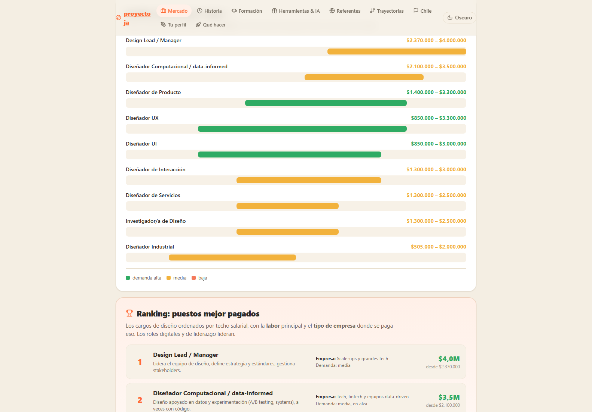
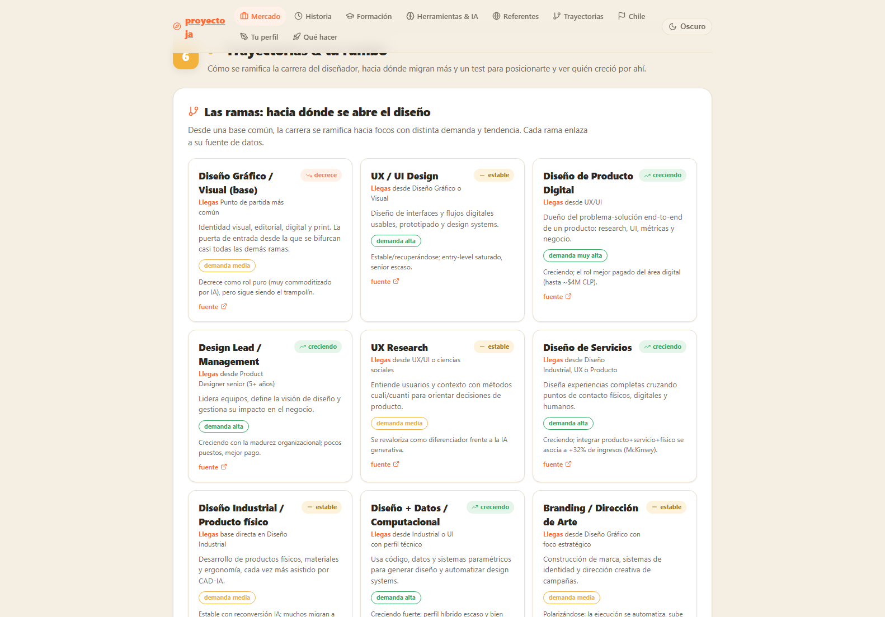
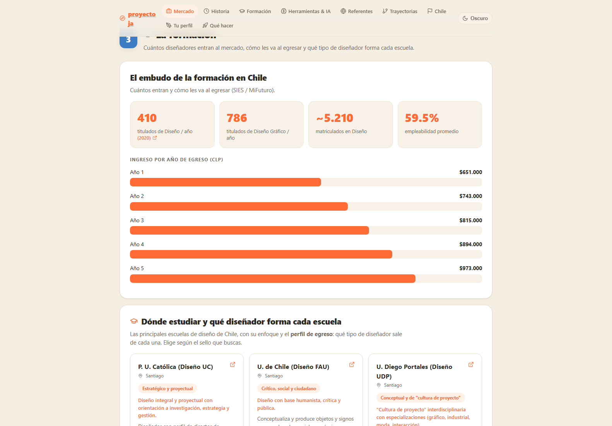

Diseño industrial en Chile
Nueve pilares de datos sobre el estado real del diseño industrial en Chile, en un solo tablero.

Un tablero que reúne en nueve pilares lo que se puede saber con datos sobre el diseño industrial en Chile: mercado y sueldos por cargo, historia del oficio, formación (diez escuelas comparadas, diseño contra ingeniería, dónde quedó la matemática), herramientas e IA, referentes, trayectorias, concursos abiertos, y dos pilares que dan vuelta el ejercicio hacia quien lee: «tu perfil» y «qué hacer». 410 titulados al año, 23 profesores con proyecto propio, 16 proyectos influyentes, 17 concursos.
Lo que lo separa de un informe es el test de posición: trece ramas del oficio entre las que uno se ubica, y a partir de ahí el panel deja de describir el mercado y empieza a responder dónde estás parado tú. Compara sueldos por cargo con filtros por demanda, y muestra hacia dónde migran los diseñadores.
No nació como proyecto de portafolio: nació porque necesitaba decidir mi propia carrera con datos y no con impresiones. Es el sustento de las decisiones que vinieron después: a qué postgrado postular, qué posicionamiento sostener, qué servicios ofrecer. Que después sirva de portafolio es una consecuencia.
Es el proyecto con más código propio de todo el conjunto y, al mismo tiempo, uno que nunca se desplegó. Técnicamente no le falta nada: le falta la decisión de publicarlo.
Bitácora
- 2026-07-04Terminado, sin publicarQueda construido y verificado. No se despliega. Es, de todos, el que más código tiene y el único de ese tamaño que nunca salió a internet.
- 2026-07-04Los nueve pilaresSe cierra la estructura: mercado, mallas, empleabilidad, distribución regional y el resto de los ejes, con la base de datos embebida en la propia aplicación.
- 2026-07-04Arranca el proyecto
Pantallas


